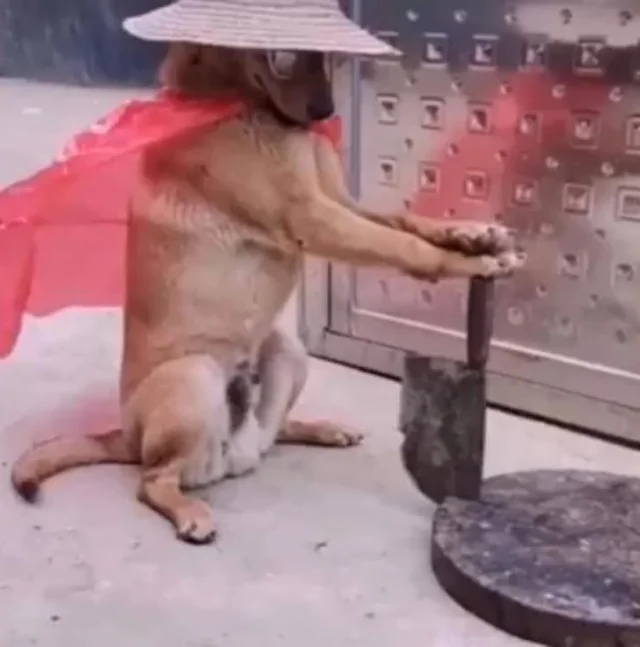

apresentação
Meu nome é enzo emanuel marques Lohmann tenho 17 anos e gosto de animais e de programação
Meu nome é Enzo Emanuel Marques Lohmann
faço parte do terceiro ano de informatica do ifpr campus capanema
criado em
Meu nome é enzo emanuel marques Lohmann tenho 17 anos e gosto de animais e de programação
oque eu mais gosto na área da tecnologia é a programação pois adoro quebrar a cabeça com os códigos e meu objetivo pessoal nessa área á criar algo que me possibilite parar de trabalhar e viver só de renda

link para os repositórios
https://github.com/enzolohmann/pasta-3-ano-info-Enzo.L-n-o-mexer/blob/main/index.html
https://github.com/enzolohmann/Projeto_enzo.L/blob/main/index.html
https://github.com/enzolohmann/pasta-enzo-apresenta--ohtml/blob/main/apresentacao.html
O primeiro link leva para minha primeira interação com o git e o github o segundo e o terceiro são apresentações sendo o terceiro mais completo